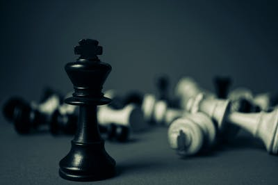
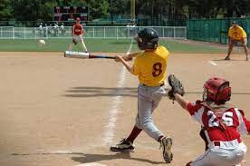
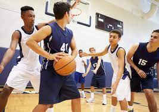
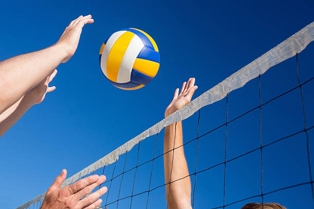

Deportes
- 
ajedrez
El ajedrez es un juego de estrategia en el que dos personas se desafían frente a un tablero cuadriculado de 64 casillas y dos grupos de figuras, 16 para cada jugador, unas blancas y otras negras: un rey, una dama, dos alfiles, dos caballos, dos torres y ocho peones. El Comité Olímpico Internacional (COI) lo considera un deporte y la Federación Internacional de Ajedrez (FIDE) regula las competiciones internacionales.
- 
baseball
El baseball es un deporte de equipo jugado entre dos conjuntos de nueve jugadores cada uno.El objetivo del juego es golpear una pelota con un bate (batear), desplazándola a través del campo y correr por el campo interno de tierra (infield) buscando alcanzar la mayor cantidad de bases posibles hasta dar la vuelta a la base desde donde se bateó (home) y lograr anotar el tanto conocido como carrera, mientras los jugadores defensivos buscan la pelota bateada para eliminar al jugador que bateó la pelota o a otros corredores, antes que éstos lleguen primero a alguna de las bases o consigan anotar la carrera
- 
basketball
El baloncesto es uno de los deportes de equipo más populares del mundo en el cual dos equipos, compuestos por cinco jugadores cada uno, se enfrentan, ya sea en una cancha cubierta o descubierta, haciendo circular un balón para finalmente introducirlo en una cesta, arco, o canasta, que está colocada a unos 3,05 m. del suelo.Por tal cuestión es que el baloncesto es un deporte que está mayormente reservado a jugadores que disponen de gran altura. Cada vez que un jugador encesta el balón en la canasta suma puntos para su equipo que pueden ser dobles o triples, dependiendo de la posición desde la cual el jugador arroja el balón.

tenis
El tenis es un juego que se juega en una cancha de forma rectangular, que puede ser una de las muchas superficies. Se juega con dos jugadores (partido individual) o cuatro jugadores (partido doble). Los jugadores se paran en lados opuestos de la red y usan una raqueta de cuerda para golpear la pelota de un lado a otro.
- 
voleyball
El voleibol es un juego de pista entre dos equipos de seis jugadores cada uno, que se juega golpeando una pelota al lado contrario por encima de una red. Cuando la pelota toca el piso o se sale de una de las dos partes de la cancha es un punto o una oportunidad para sacar para el otro equipo. Se trata de un deporte que se ha posicionado como uno de los juegos más practicados en el mundo. En la actualidad, el voleibol es una disciplina que se imparte en colegios, academias, escuelas y se puede jugar de manera formal e informal.